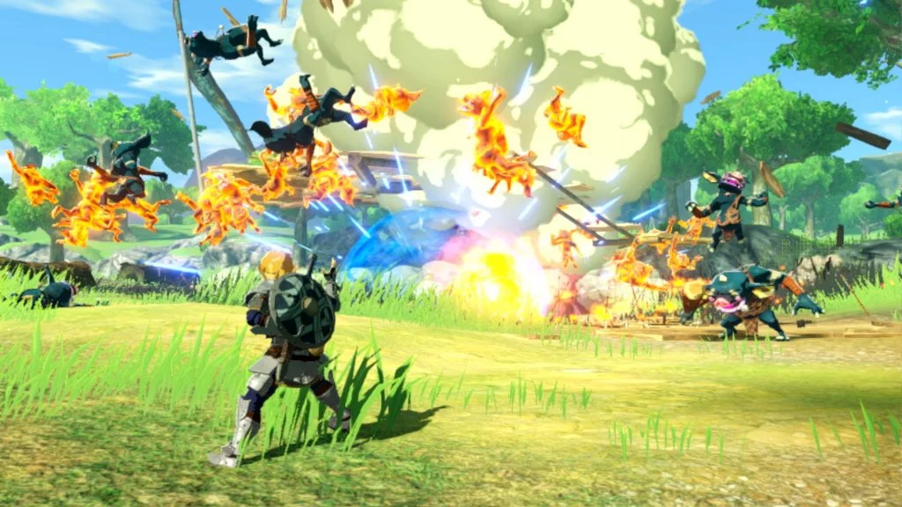

Hyrule Warriors, Age of Calamity
Nintendo Switch shquhet për shumë lojëra të ndryshme dhe një ndër to është Legend of Zelda: Breath of the Wild. Kjo seri sjellë tashmë një prequel spin-off të quajtur Hyrule Warriors: Age of Calamity. Por a është kjo lojë në nivelin e Legend of Zelda apo është thjesht një lojë e krijuar thjesht për t’iu bërë qejfin lojtarëve? Për të mësuar më shumë ndiqni review tonë.
Hyrule Warriors, Age of Calamity nis në mbretërinë e Hyrule gjatë kohës që Zelda dhe Link ndeshen me Calamity Ganon. Gjatë këtyre momenteve, një mini Guardian aktivizohet dhe udhëton pas në kohë në mënyrë që të gjejë Zelda dhe Link përpara fillimit të kësaj lufte. Tashmë ngjarjet zhvendosen pothuajse 100 vite përpara kësaj lufte ku Link dhe miqtë e tij po luftojnë kundër disa ushtrive armike të cilat duan të pushtojnë mbretërinë e Hyrule.
Gjatë kësaj kohe ju do të mësoni se si të ndër veproni me lojën dhe fansat të cilët kanë luajtur të gjitha lojërat të cilat kanë lidhje me Legend of Zelda, do të vënë re se Age of Calamity është një kombinim i bukur midis lojërave Breath of the Wild dhe Hyrule Warriors. Më pas ju do të filloni të luani si Impa dhe këtu ju do të kuptoni se loja iu ofron të luani dhe ta shikoni botën si personazhe të ndryshme që loja ka duke e bërë Age of Calamity një loja prequel por gjithashtu edhe spin-off në të njëjtën kohë.
Historia zhvillohet shumë bukur dhe marrëdhëniet ndërmjet personazheve tregohen me shumë kujdes dhe vëmendje. Mënyra se si tregohet është tepër e bukur dhe ka për t’iu mbajtur para lojës për një kohë të gjatë. Ne e përfunduam lojën brenda afërsisht 20 orëve dhe mund të themi që u kënaqëm shumë gjatë kësaj kohe. Gjatë progresit në lojë do të merrni edhe personazhe të ndryshëm të cilët mund t’i përdorni në misione të ndryshme, t’iu përmirësoni armën ose t’i bëni më të fuqishëm duke i stërvitur në këmbim të rupee.
Si përfundim mund të themi që Hyrule Warriors: Age of Calamity është me të vertetë një lojë prequel spin-off e cila i shkon përshtat historisë së Legend of Zelda por me shumë limitime të cilat i ulin goxha shumë potencialin në lojë. Por prapë së prapi mund të themi që është një lojë argëtuese e cila sjell goxha histori për fansat e Legend of Zelda dhe që do t’iu bëj për vete në shumicën e rasteve.
GamingKosovo


COPYRIGHT © 2019-2020 GamingKosovo | TË GJITHA TË DREJTAT E REZERVUARA